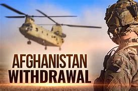
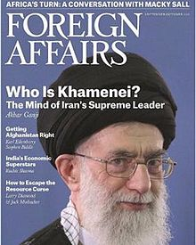
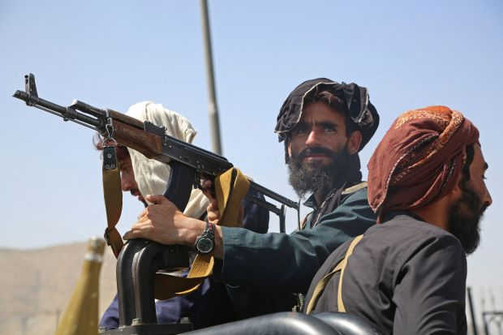

|  | HEY, Welcome to Archit Singh's first ever blogging website,here there are some views on whats happening in Afghanistan |
About Foreign Affairs magazineForeign Affairs is an American magazine of international relations and U.S. foreign policy published by the Council on Foreign Relations, a nonprofit, nonpartisan, membership organization and think tank specializing in U.S. foreign policy and international affairs.[1] Founded on 15 September 1922, the print magazine is currently published every two months, while the website publishes articles daily and anthologies every other month. Foreign Affairs is considered one of the United States' most influential foreign policy magazines. Over its long history, the magazine has published a number of seminal articles including George Kennan's "X Article", published in 1947, and Samuel P. Huntington's "The Clash of Civilizations," published in 1993.[2][3] Important academics, public officials, and policy leaders regularly appear in the magazine's pages. Recent Foreign Affairs authors include Robert O. Keohane, Hillary Clinton, Donald H. Rumsfeld, Ashton Carter, Colin L. Powell, Francis Fukuyama, David Petraeus, Zbigniew Brzezinski, John J. Mearsheimer, Stanley McChrystal, Christopher R. Hill and Joseph Nye. |
|
1922-1945The lead article in the first issue of Foreign Affairs was written by former Secretary of State under Theodore Roosevelt's Administration, Elihu Root. The article argued that the United States had become a world power, and that as such the general population needed to be better informed about international matters. John Foster Dulles, then a financial expert attached to the American Commission to Negotiate Peace, who would later become Secretary of State under Dwight D. Eisenhower, also contributed an article to the inaugural issue of Foreign Affairs on Allied debt following World War I. In 1925, Foreign Affairs published a series of articles, entitled "Worlds of Color", by prominent African American intellectual W. E. B. Du Bois. DuBois, a personal friend of Armstrong, wrote mainly about race issues and imperialism. Although in the early days of publication the journal did not have many female authors, in the late 1930s American journalist for Time magazine Dorothy Thompson would contribute articles. | 
|
Biden had inherited a deal from former President Donald Trump to withdraw forces by May 1, 2021, leaving him with a choice to either follow through belatedly on the agreement or escalate the conflict by sending thousands of troops into combat. He warned that remaining in Afghanistan would mean "additional US casualties - and continue a war that started two decades ago. During a press conference on August 12, 2021, the White House press secretary Jen Psaki said: “We’re not going to have a ‘mission accomplished’ moment in this regard. It’s a 20-year war that has not been won militarily.” This was a reference to former President George W Bush’s “Mission Accomplished” speech in 2003, a statement that has been widely criticised after he announced that “major combat operations in Iraq have ended”. After the chaos unfolded in mid August, Biden assured: “I stand squarely behind my decision. “After 20 years, I’ve learned the hard way that there was never a good time to withdraw US forces.” “We planned for every contingency but I always promised the American people that I would be straight with you. The truth is, this did unfold more quickly than we had anticipated. "So, what’s happened? Afghanistan political leaders gave up and fled the country. The Afghan military collapsed sometimes without trying to fight." Shocking images showed the onslaught of Kabul residents desperately trying everything to leave the country, with chaos at the airport and even people clinging to planes. And as the Taliban rampages across the country, some of its most brutalised victims have been - and will be - the country's women. Already there have been reports of girls as young as 12 being married off to fighters, a woman being shot for wearing "tight clothes", and women being told they cannot leave home without a male chaperone. Why were US troops in Afghanistan? From 2001, the US troops and North Atlantic Treaty Organisation (Nato) allies forced the Taliban from power. The US invaded Afghanistan to locate Osama Bin Laden and other al-Qaeda figures linked to the 9/11 attacks. Despite a continued presence since, the Taliban has regrouped and regained strength in more remote areas. Billions of dollars were assigned to US troops to fight a Taliban insurgency and fund reconstruction. While other foreign troops were present in the country, Nato ended its combat mission in December 2014, but decided to keep a 13,000-strong force to help train Afghan forces.
After nearly 20 years of being curtailed by US forces, the Taliban has taken over the country. The group now controls all key cities across the country. Afghan President Ashraf Ghani fled on Sunday, August 15, to Uzbekistan. The Taliban took some areas from the government by force but in other areas, the Afghan forces withdrew without a shot being fired from either side. On July 9, the Taliban controlled more than 90 cities, 167 were contested and 141 were controlled by the government. On August 15, 12 cities remained under the government’s control, 41 are contested and 345 have been taken by the militants. Zaranj was the first provincial capital to fall to the Taliban in early August. In the following days, the group took several more cities and then on August 13 they took four major cities in one day.